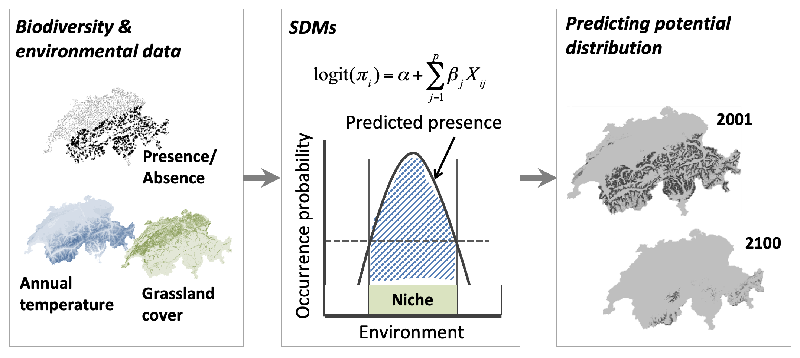

Current industry practices
Environmental impact assessments are commonly used to assess the impact of new urban developments on biodiversity, and serve to protect natural areas through legislation. In cities such as Singapore, independent consultancies often conduct the assessments and produce reports that are used as points of reference when engaging stakeholders (e.g., government agencies, nature groups) and the general public.
As a part of these assessments, on-site surveys of plants and animals are conducted within the area slated for development. These opportunistic records can provide a general picture of biodiversity and potential ways to mitigate environmental impact. However, the recommendations provided tend to be qualitative and too coarse for planning at fine spatial scales (see examples in Fig. 1). In current practice, there is no way to quantitatively scrutinise between proposed design scenarios, and to compare between present and future ‘performance’.
A predictive approach is needed
Predictive spatial modelling can address the shortcomings of opportunistic sampling, and is able to assess biodiversity at spatial scales required to inform planning decisions (0.1–100 hectares). For example, species distribution modelling (SDM)1 is a technique that can be used to predict the distribution of a species across geographic space and time, based on environmental conditions such as climate and the physical landscape (Fig. 2). Such SDM frameworks have the potential to provide much better rigour and spatial precision if integrated into the urban development process.

One limitation of SDMs, however, is their focus on only a single species of interest. Information about the number of species (species richness) observed at a location are not considered. For instance, natural forests may support a lot more species (high species richness) each in greater numbers (high species abundances) compared to urban areas (see Fig. 3). However, SDMs would only convey the probability of occurrence for a chosen species (e.g., habitat suitability map in Fig. 2). While SDMs can be applied to a ‘keystone’ species2, there are challenges in identifying such species3 and ensuring that the chosen species accurately represents the ‘total biodiversity’ of an urban area.
Community structure is another aspect of biodiversity that is still an active area of research, which SDMs do not represent well. While it is possible to combine multiple SDMs4 to produce a community-level model, the diversity of species communities between different areas (Beta diversity; see Fig. 4) is not represented in such models. For example, two urban regions may both have the same total number of species (Gamma diversity; see Fig. 4), but the presence of large water bodies in one may result in diverse communities of water-loving species that can not be found elsewhere. SDMs are not able to highlight the presence of such distinct communities (e.g., Beta diversity map in Fig. 5), which is crucial when prioritising areas for conservation and urban development.
Filling the gap in current methods
As part of a research project, our team has been developing methods to incorporate these missing elements (e.g., Alpha, Beta, and Gamma diversity) into predictive spatial modelling of biodiversity. We’ve also been working on an R package biodivercity which will allow users to develop and apply such models for their own use cases, and validate model results based on data that they collect. Our method assesses the habitat suitability of landscapes based on their physical characteristics (e.g. spatial patterns of land cover from satellite imagery & LiDAR data, built elements from OpenStreetMap). However, instead of examining the effect of landscapes on individual species, we instead examine their effect on four major animal groups (birds, butterflies, odonates and amphibians) found in Singapore (Fig. 5).
If models are built using remotely sensed landscape data, we can easily predict the diversity of each animal group across time and geographical space (Fig. 5). For example, the interactive map below shows the Alpha (local) diversity of odonates predicted across all subzones5 in Singapore during the year 2020, at a coarse pixel resolution of 100 hectares. Depending on the level of detail required, the pixel resolution can be adjusted accordingly (e.g., 0.1 hectares).
Pixel values can be subsequently summarised within the zones used in city planning, to allow comparisons to be made between these planning units (Fig. 5). The resulting distribution of the summarised values can subsequently be used to compare the ‘performance’ of each planning unit relative to others in the city, or to a set a benchmark/target for the desired level of ‘performance’ (Fig. 6). For example, subzones in Singapore could be benchmarked against the mean of the distribution, as shown below:
If spatial predictions were made for multiple snapshots in time, benchmarking could be based on whether the average pixel value for a particular planning unit increases or decreases between two time periods (Fig. 5). For example, if ‘no net loss’ in biodiversity is set as a target, a negative score could be assigned if the average pixel value is reduced, while a positive score could be assigned if the average pixel value increases.
Finally, it is worth noting that our method allows full customisation of both the pixel size and boundaries within which to summarise the pixel values. This provides flexibility according to the level of analysis (e.g., geographical scale) required by the user. By summarising pixel values within zones used in city planning, animal diversity may be assessed alongside other indices also summarised at the level of these planning units, thus providing a more comprehensive view of components related to biodiversity and beyond (Fig. 5).
Biodiversity in the future
Landscape data from remotely sensed sources allow biodiversity to be monitored in the past and present. However, there is also a need to assess future urban developments, for instance, to see if proposed designs can effectively mitigate the loss of biodiversity. But since such landscapes do not exist, snapshots of remotely sensed data can not be used. It is therefore important to carefully consider data compatibility between these different use cases when building and using the predictive models.
Urban design and planning involves the consideration of multiple design scenarios. Manually generated landscape elements (e.g., vector data for vegetation and water) may be produced from prospective designs, but the format and types of such data must be compatible with those used in the predictive models. For instance, when selecting landscape predictors to build the models, land cover classification as discrete rasters would be more compatible with manually generated data, compared to continuous rasters that cannot be feasibly calculated (e.g., spectral indices such as NDVI). Vegetation generated in design scenarios can be rasterized into discrete land cover-types (Fig. 7), and used to replace the remotely sensed data within regions of interest (Fig. 8). Such amendments to landscape data can be made across a site slated for urban development, and then used to make spatial predictions for that particular design scenario (see maps in Fig. 5).

While such data conversions may allow similar predictors (and hence models) to be used for different use cases, it should be noted that potential mismatches between different data sources may result in inaccurate predictions. For instance, the level of detail in design scenarios may not include the exact locations of planted trees, and their estimated canopy projection areas may vary greatly from reality after planting. Furthermore, the remotely sensed data represents a top-down view of the landscape, and the effect of multi-tiered planting is not accounted for within the landscape predictors. Collaboration between researchers and practitioners is needed to ensure that model workflows align with the data formats and outputs used in design practice, and that suitable methods are used to ensure that artificially generated datasets are both compatible and accurate to reality after implementation.
Summing it up
Environmental impact assessments help keep governments and companies accountable as they embark on urban development projects. However, current methods do not provide the level of precision required to make quantitative comparisons between places and across time, especially into the future. We also need a much higher level of nuance when prioritising areas for development/conservation, in terms of the number (Alpha diversity) and communities (Beta diversity) of species spatially distributed across the landscape. We will soon be releasing the first version of our R package biodivercity, which we hope will contribute to the larger toolbox of methods used to assess biodiversity in cities. Stay tuned!
Acknowledgements
This blog post showcases some of the work undertaken in a research project to develop a biodiversity index for residential towns. It was funded from 2016–2022 under the Singapore Ministry of National Development Research Fund, awarded to the National University of Singapore in partnership with the Singapore Housing & Development Board. The lead investigator is Dr. Chong Kwek Yan, with co-investigators Dr. Hugh Tan and Dr. Darren Yeo. The working team includes Justin Nai, Edwin Tan, Hong Jhun Sim, Rachel Lee, and other members of the field team.
This post is also shared on R-bloggers.com.
Footnotes
Baker, D. J., Maclean, I. M., Goodall, M., & Gaston, K. J. (2021). Species distribution modelling is needed to support ecological impact assessments. Journal of Applied Ecology, 58(1), 21-26.↩︎
Bond, W. J. (1994). Keystone species. In Biodiversity and ecosystem function (pp. 237-253). Springer, Berlin, Heidelberg.↩︎
Power, M. E., Tilman, D., Estes, J. A., Menge, B. A., Bond, W. J., Mills, L. S., … & Paine, R. T. (1996). Challenges in the quest for keystones: identifying keystone species is difficult—but essential to understanding how loss of species will affect ecosystems. BioScience, 46(8), 609-620.↩︎
Schmitt, S., Pouteau, R., Justeau, D., De Boissieu, F., & Birnbaum, P. (2017). ssdm: An r package to predict distribution of species richness and composition based on stacked species distribution models. Methods in Ecology and Evolution, 8(12), 1795-1803.↩︎
Government of Singapore (2020). Master Plan 2019 Subzone Boundary (No Sea). data.gov.sg. Released under the terms of the Singapore Open Data Licence version 1.0.↩︎
Citation
BibTeX citation:
@software{x. p.2022,
author = {X. P. , Song and E. Y. W. , Tan and S. K. R. , Lee and H. J.
, Sim and J. , Nai and K. Y. , Chong},
title = {Biodivercity: {An} {R} Package for Spatial Assessment of
Biodiversity Across City Landscapes},
version = {0.1.0},
date = {2022},
url = {https://xp-song.github.io/posts/biodivercity},
doi = {10.5281/zenodo.7410414},
langid = {en}
}
For attribution, please cite this work as:
X. P., Song, Tan E. Y. W., Lee S. K. R., Sim H. J., Nai J., and Chong K.
Y. 2022. “Biodivercity: An R Package for Spatial Assessment of
Biodiversity Across City Landscapes.” https://doi.org/10.5281/zenodo.7410414.